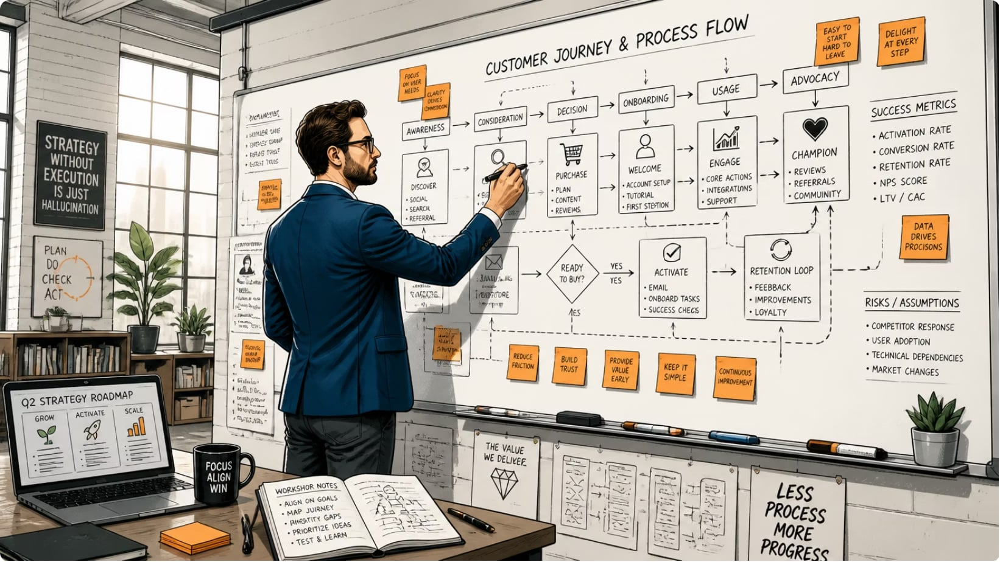
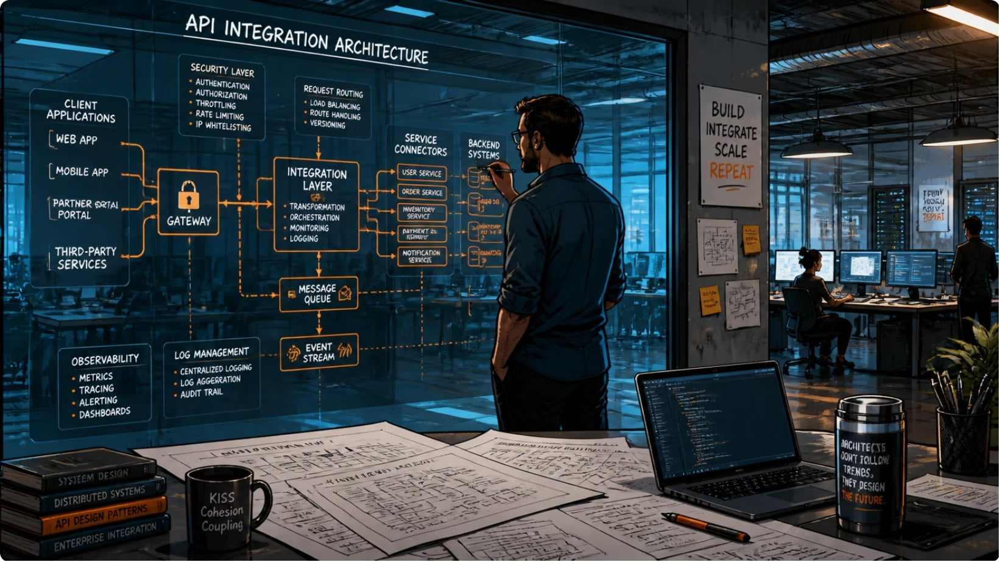
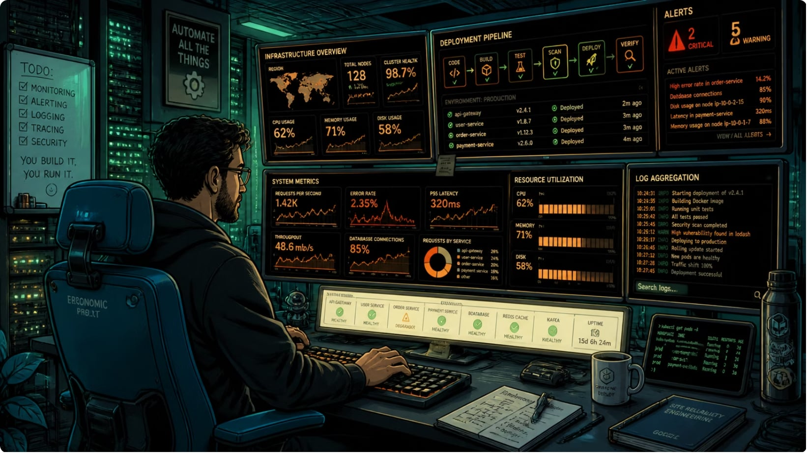

Проясняю
Перевожу нечёткие потребности в проверяемые требования, процессы и метрики.
Независимый эксперт по цифровым продуктам и IT-системам
Помогаю превратить неструктурированную потребность в спроектированное, запущенное и поддерживаемое решение.
Ценность
Связываю заказчика, разработку, QA, безопасность и эксплуатацию. Не ограничиваюсь документами: довожу решение до работающего контура и измеримого результата.
Перевожу нечёткие потребности в проверяемые требования, процессы и метрики.
Создаю архитектурные варианты, API-контракты, модели данных и NFR.
Автоматизирую инфраструктуру, CI/CD, мониторинг и эксплуатационные процессы.
Экспертиза
Выявление потребностей стейкхолдеров, AS-IS / TO-BE, BPMN 2.0, BRD, KPI, оценка рисков и фасилитация согласований.
Результат: единое понимание того, что и зачем нужно сделать.
REST/SOAP API, OpenAPI, UML/BPMN, ERD, SQL, модели данных и нефункциональные требования к доступности, безопасности и масштабированию.
Результат: меньше потерь на уточнения и ниже риск ошибок интеграции.
Product vision, roadmap, CustDev, JTBD, Customer Journey Map, гипотезы, MVP, RICE, воронки, retention, LTV, CAC и P&L.
Результат: продукт решает проблему клиента и создаёт ценность для бизнеса.Инфраструктура как код, контейнеризация, CI/CD, мониторинг, логирование, алертинг, резервное копирование, DR и базовая безопасность.
Результат: контролируемые релизы и сокращение времени восстановления.
Подход
Интервью, процессы, данные, ограничения и рынок.
Согласованные цели и критерии успеха.MVP, целевая модель, архитектурные варианты, backlog.
Обоснованный план и приоритеты.Требования, API, процессы, данные и NFR.
Документация для разработки и QA.CI/CD, инфраструктура, окружения и автоматизация.
Воспроизводимый контролируемый релиз.Метрики, мониторинг, гипотезы и оптимизация.
Управляемое развитие и снижение рисков.Форматы
От быстрой диагностики до временного руководства направлением. Объём и формат фиксируются после короткого вводного разговора.
Диагностика, карта рисков, рекомендации и план действий.
Lean Canvas, PRD, требования, roadmap и метрики успеха.
Требования, схемы, API-контракты и поддержка delivery.
IaC, CI/CD, мониторинг, документация и runbooks.
Стратегия, приоритеты, метрики и координация команды.
Jira, Confluence, Miro, BPMN, UML, PlantUML, Agile, Scrum, Kanban, CustDev, JTBD, PowerBI, DataLens
SQL, PostgreSQL, MySQL, Redis, ClickHouse, REST, SOAP, JSON, YAML, OpenAPI, Postman, Kafka, RabbitMQ
Linux, Bash, Python, GitLab CI/CD, Jenkins, Docker, Kubernetes, Helm, Terraform, Ansible, Nginx, Yandex Cloud
Prometheus, Grafana, Zabbix, ELK, Loki, Alertmanager, Disaster Recovery, сетевые политики и аудит
Опыт
Контакт
Коротко опишите контекст, текущую проблему и ожидаемый результат. В ответ предложу формат первого шага.
Написать @bgorelik bgorelik.ru ↗